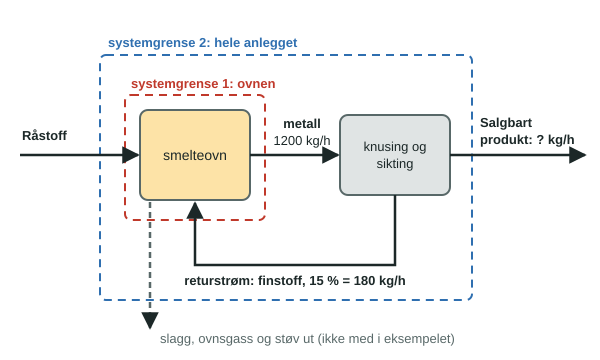

Resirkulering og utbytte
Råstoff og energi koster penger, og avfall må tas hånd om. Derfor vil ingen anlegg kaste stoff som kan brukes. Det som ikke blir produkt første gang, sendes ofte tilbake i prosessen. På denne siden lærer du å sette opp massebalanser for slike anlegg og å regne ut hvor godt råstoffet blir utnyttet.
Hva er resirkulering?
Resirkulering betyr at en del av en strøm sendes tilbake til et tidligere sted i prosessen og blandes med strømmen som går inn der. Strømmen som går tilbake, kalles en returstrøm. Noen eksempler:
- Råstoff som ikke reagerte i reaktoren, skilles ut og sendes tilbake til reaktoren.
- Produkt som er for fint eller for grovt til å selges, smeltes eller knuses om.
- Støv som fanges i renseanlegget, sendes tilbake til ovnen i stedet for å bli avfall.
Systemgrensen avgjør hva du ser
Med resirkulering blir det ekstra viktig å velge systemgrense. Figuren viser et smelteverk med to mulige systemgrenser.

- Rundt hele anlegget ser du ikke returstrømmen. Den går fram og tilbake inne i systemet. For metallet er det da enkelt: Metallet som lages av råstoffet, kommer ut som produkt.
- Rundt ovnen krysser returstrømmen grensen. Da ser du at ovnen må smelte mer enn det som til slutt selges.
Eksempel 1: Finstoff tilbake til ovnen
Smelteverket i Sauda lager manganlegeringer i store elektriske smelteovner. Legeringene brukes til å lage stål. Når metallet har størknet, knuses det og siktes til de bitstørrelsene kundene vil ha. Biter som er for små (finstoff), kan sendes tilbake og smeltes om. Tallene i eksempelet er tenkte og er valgt for å vise prinsippet.
Oppgave: Ovnen leverer 1200 kg/h metall. Etter knusing og sikting er 15 % finstoff, og det sendes tilbake til ovnen. Resten selges. Vi ser bare på metallet og antar at alt finstoffet smeltes om uten tap. Hvor mye metall selges, og hvor mye nytt metall må ovnen lage av råstoffet?
Løsning:
- Finstoff: \( 1200 \text{ kg/h} \cdot 0{,}15 = 180 \text{ kg/h} \)
- Balanse rundt knusing og sikting: \( \text{salgbart produkt} = 1200 \text{ kg/h} - 180 \text{ kg/h} = 1020 \text{ kg/h} \)
- Balanse rundt ovnen (systemgrense 1): Metallet ut av ovnen er nytt metall fra råstoffet pluss omsmeltet finstoff: \[ 1200 \text{ kg/h} = \text{nytt metall} + 180 \text{ kg/h} \quad \Rightarrow \quad \text{nytt metall} = 1020 \text{ kg/h} \]
- Sjekk rundt hele anlegget (systemgrense 2): Nytt metall fra råstoffet er 1020 kg/h, og salgbart produkt er 1020 kg/h. Inn = ut. Det stemmer.
Svar: Anlegget selger 1020 kg/h metall. Ovnen lager 1020 kg/h nytt metall fra råstoffet, men må smelte 1200 kg/h fordi finstoffet går en runde til.
Resirkuleringen gjør at finstoffet ikke går til spille. Prisen er at ovnen må bruke energi på å smelte det samme metallet to ganger. Derfor prøver anlegget å holde andelen finstoff lav.
Utbytte: hvor godt blir råstoffet utnyttet?
I Kjemiske prinsipper har du kanskje lest om utbytte. Her er formelen:
\[ \text{utbytte} = \frac{\text{faktisk utbytte}}{\text{teoretisk utbytte}} \cdot 100\,\% \]
Teoretisk utbytte er det du kunne fått hvis ingenting gikk tapt. Faktisk utbytte er det du får og måler. I et smelteverk er det vanlig å regne utbytte for ett grunnstoff, for eksempel hvor mye av manganet i malmen som havner i metallet. Resten går tapt, for eksempel i slagg og støv.
Vil du lære hvordan teoretisk utbytte regnes ut fra en reaksjonsligning, kan du lese fordypningen Begrensende reaktant og utbytte.
Oppgave: Ovnen får 1000 kg malm som inneholder 45 % mangan. Metallet som tappes, inneholder 390 kg mangan. Hva er manganutbyttet?
- Teoretisk utbytte av mangan: \( 1000 \text{ kg} \cdot 0{,}45 = 450 \text{ kg} \)
- Faktisk utbytte av mangan: 390 kg
- Utbytte: \( \dfrac{390 \text{ kg}}{450 \text{ kg}} \cdot 100\,\% = 86{,}7\,\% \)
- Massebalanse for mangan: \( 450 \text{ kg} - 390 \text{ kg} = 60 \text{ kg} \) mangan har havnet i slagg og støv.
Svar: Manganutbyttet er 86,7 %.
Med resirkulering: Anta at støvet fra renseanlegget inneholder 15 av de 60 kiloene, og at støvet sendes tilbake til ovnen. Havner det manganet i metallet, blir det \( 390 + 15 = 405 \) kg mangan i metallet. Utbyttet blir da \( \dfrac{405}{450} \cdot 100\,\% = 90{,}0\,\% \).
Utbyttet kan aldri bli over 100 %. Det ville betydd at det kom ut mer mangan enn det gikk inn. Får du over 100 %, er det en feil i målingene eller i regnestykket. Massebalansen er en god sjekk.
Flytende metall og slagg holder ca. 1400–1600 °C når de tappes. Vann som kommer i kontakt med flytende metall eller slagg, fordamper eksplosjonsartet og kan slynge ut smelte. Ovnsgassen inneholder karbonmonoksid (CO), som er giftig og ikke kan ses eller luktes. Støv fra knusing og fra renseanlegget skal ikke pustes inn. I slike områder brukes varmebeskyttende klær, gassmåler og åndedrettsvern etter anleggets prosedyrer.
Test deg selv
1. Hva er en returstrøm?
- strømmen som går ut som ferdig produkt
- en strøm som sendes tilbake til et tidligere sted i prosessen
- avfall som sendes til deponi
En returstrøm går tilbake og blandes med strømmen inn, for eksempel finstoff som smeltes om.
2. Du setter systemgrensen rundt hele anlegget. Hvorfor er returstrømmen ikke med i balansen?
- fordi den er så liten
- fordi den ligger helt inne i systemet og ikke krysser grensen
- fordi resirkulert stoff ikke har masse
Bare strømmer som krysser systemgrensen, er med. Returstrømmen går fram og tilbake inne i systemet.
3. En ovn leverer 2000 kg/h metall. 10 % er finstoff som sendes tilbake. Hvor mye selges?
- 200 kg/h
- 1800 kg/h
- 2200 kg/h
Finstoff: 2000 · 0,10 = 200 kg/h. Salgbart: 2000 − 200 = 1800 kg/h.
4. Råstoffet kan i teorien gi 500 kg metall. Du får 450 kg. Hva er utbyttet?
- 50 %
- 90 %
- 111 %
450 / 500 · 100 % = 90 %
5. Hvorfor sender et smelteverk støv fra renseanlegget tilbake til ovnen?
- for at ovnen skal bli varmere
- for å få et utbytte på over 100 %
- for å utnytte manganet i støvet og få mindre avfall
Støvet inneholder mangan, mest som oksider. Sendes det tilbake, havner mer av manganet i produktet, og utbyttet øker.
Ordliste
| Begrep | Forklaring | Engelsk |
|---|---|---|
| resirkulering | Å sende en del av en strøm tilbake til et tidligere sted i prosessen, slik at stoffet blir brukt på nytt. | recycle stream |
| returstrøm | Strømmen som sendes tilbake i prosessen ved resirkulering. | recycle stream |
| finstoff | Biter av produktet som er for små til å selges, for eksempel etter knusing og sikting. | fines |
| utbytte | Faktisk utbytte delt på teoretisk utbytte, ganget med 100 %. Det viser hvor stor del av det mulige produktet du faktisk får. | yield |
| slagg | En smelte av oksider fra urenhetene i malmen og fra tilsatte stoffer. Den skilles fra metallet i smelteovnen, er lettere og flyter oppå. | slag |
Les mer
- Massebalanse i et anlegg og Separasjon: systemgrense, totalbalanse og stoffbalanse.
- Fordypning i Kjemiske prinsipper: Begrensende reaktant og utbytte.
Om kildene: Teksten, eksemplene og figurene på denne siden er laget for dette nettstedet. Tallene fra smelteverket er tenkte og er ikke driftsdata fra Sauda. Siden bygger på undervisningsopplegg i kjemiprosess- og laboratoriefag ved Sauda vgs, som er utarbeidet med utgangspunkt i blant annet Kjemien stemmer, Laboranten og åpne nettkilder.